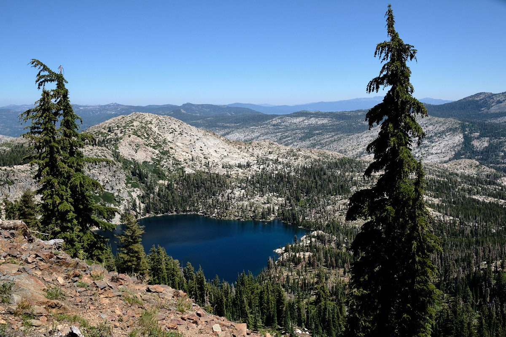
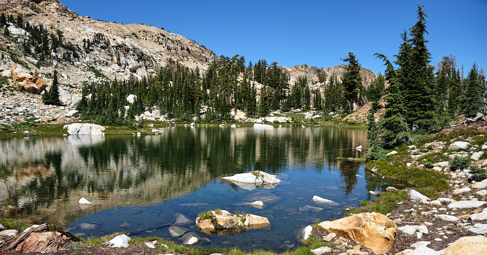
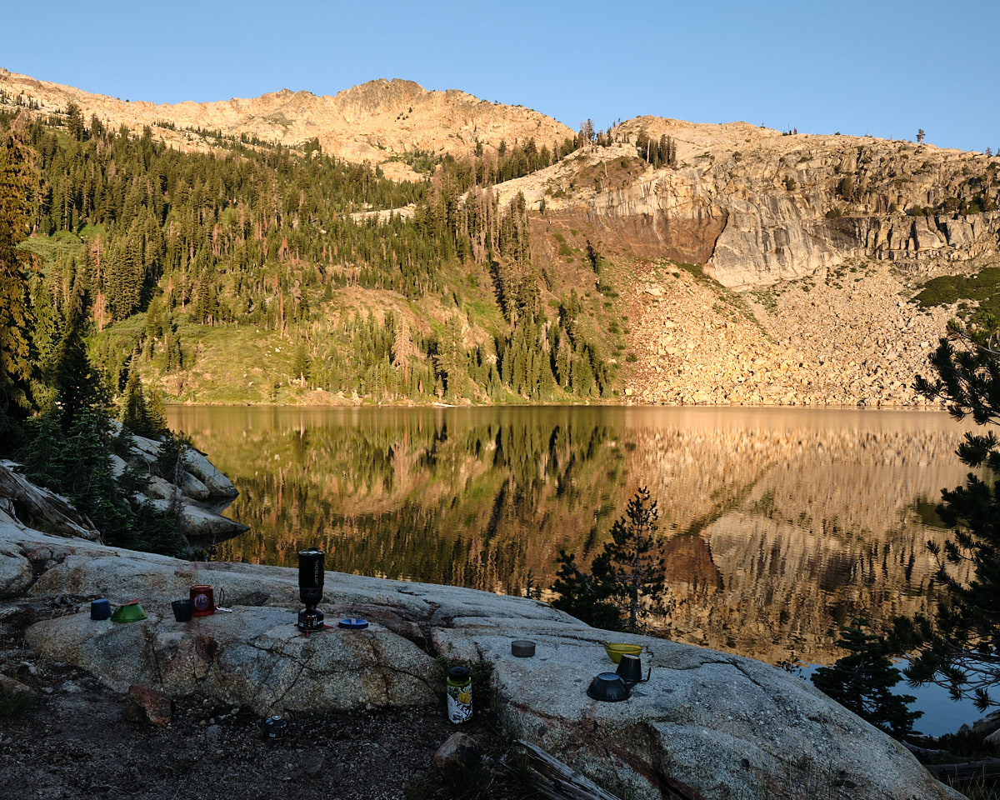

Hitting the trail
Our quest for the perfect lake in California’s Sierra Nevada continued this year with backpacking in the Desolation Wilderness. This year Micah Jacob and I were joined by a special guest: nephew Jack. We planned a four day trip:
- From the Wright Lake trailhead to Maude Lake
- Then over the Rockbound Pass at nearly 9000 feet, to Lake Schmidell
- A day hike, return to camp at Lake Schmidell
- Return 9 miles to Wright Lake
Day One: To Maude Lake
We left chilly, foggy San Francisco at about 9:30 am and arrived at Wright Lake for a lunch of fresh Indian dips, procured from the Noe Valley Farmer’s Market. Everyone was then eager to leave, especially Jack as this was his first backpacking trip. Soon we made it to the wilderness boundary, and could see the clear skies, gray granite, and green pines ahead.

The path opened before us, in this case across a huge slab of granite lined by marker rocks. The “Desolation Wilderness” seemed to be living up to its name. However, names can deceive, and we were soon to learn that the Desolation Wilderness had beautiful surprises in store for us.
A hike of about 5 miles and 1000 feet in elevation gain brought us to Maude Lake by late afternoon. Micah was first to jump into the lake and declared it to be “Swimming Pool temperature!”
A special treat is that it was Jacob’s Birthday. Earlier in the morning, gifts were distributed: astronaut ice cream, a energy bar in “Birthday Cake” flavor, a backpacking frisbee, some backcountry shirts, and–a small, magnetic chess set. That evening Jack and Jacob locked horns in a well-played set of games.
Day Two: To Rockbound Pass
After a good night’s sleep at Maude Lake, and the finest instant oatmeal for breakfast, it was time for the major challenge of the trip: Rockbound Pass. From the lake, we could clearly see the u-shaped gap in the mountains. This would be the location of the pass. The entire U was lined with steep granite boulders, and a waterfall of granite poured down the from the bottom of the U. Was there actually a walkable trail?
We hiked about 20 minutes over a flat section, and then the climb began. In the photo you can see Jack starting on the switchbacks, with Micah and Jacob ahead. As would be the case for four days, I was bringing up the rear. It was a cool, clear morning. Perfect for hiking.

After about an hour of climbing up stair-like rocks, we made it!
As seen here, the pass lives up to its rocky name.
Micah, with our climb up the pass behind him.
Day Two: From Rockbound Pass to Lake Schmidell
Now the surprises began. The desolation wilderness was a-bloom with huge meadows of wildflowers! For hours of walking, we would cross patches of woods or granite, but then traverse long flower-filled meadows, with grand views of surrounding mountains.
Always the three boys were ahead, so all my trail photos are of their backsides!
At times, the flowers were more than waist-high.
We first passed Lake Doris, which was beautiful, but small and very rocky. Then next major lake was beautiful! Lake Lois had snow and a waterfall at one end, and a gradual green slope rising to mountain peaks. A prize winner!
We got somewhat lost after Lake Lois, as we mistakenly started to follow its outlet down a valley, but really we should have been heading upwards. The recovery was annoying, due to deep glacial channels rolling down the valley. We had to cross a whole series of these to find our way back to the trail.
Our destination, Lake Schmidell, was perfect. And we had talked to others on the trail earlier in the day. They described the perfect campsite location. And when we arrived, it was ours. The campsite was on a granite bench (to the right in the photo), about 30 feet above lake level. We had a granite “beach” to warm ourselves after lake swims. And the site was lined with trees that supported our three hammocks in a row, each with a perfect view of the lake and the mountains.

Day Three: Exploring Alpine Lakes
I awoke earlier than the boys and was treated to sunrise at Lake Schmidell. The rising sun set mountains aglow in reds and oranges. And the mountains reflected in calm, still lake.
After a bowl of instant oatmeal every bit as delicious as the first morning’s oatmeal, Jacob suggested we spend the day off trail in search of two higher alpine lakes we could see on the map. Looking up, we could visualize where they would be.
And I wanted to go back to Lake Lois to get closer to the waterfall. We decided we could do both. We packed up some lunch and daypacks, and we were off.
Here Jack jumps across a stream on the way to the first alpine lake.

The climb soon proved worthwhile. The first lake seemed pristine and there was no one in sight. I often describe the Sierras as elemental. This lake fit the bill:
- Granite
- Water
- Pine
- Sky
It’s worth noting that we hardly saw a cloud across our four day adventure!

Soon we also found the second lake, which was hanging on the mountain side, with a sharp drop off to Lake Schmidell below. Jack celebrated the high point of his trip. And if you look closely at the top left of the photo, you can see a sliver of Lake Tahoe. From this spot, we could see both ends of Tahoe, but not the middle (due to a mountain blocking our view). What a grand vista!
My father’s engraved “Ira A. Roschelle” swiss army knife joined us for the trip, making a three generation trip. Or perhaps a four generation trip if you consider that Jack was named for Popi, my grandfather.
Yummy lunch!

Jack and Micah decided to make a loop and take a shortcut back to our campsite for an early swim. Meanwhile, Jacob and I sought a cross-country, off-trail route to the Lake Lois waterfall. We found it! Our path was filled with the best meadows yet. Indeed, for a moment, Jacob turned into a flower child.
Day Four: Reflections and Return
On day four, I woke the boys around 6:30 am so we could pack up early and begin the 9 mile hike to our car. But I had an ulterior motive: I wanted them to see the sunrise on the lake as well. It was especially beautiful this morning, as the waters were still. I was able to take a number of great reflection shots to go with our freeze-dried coffee and instant oatmeal

This morning fit the spirit of the trip perfectly. It was quiet, colorful, and filled with pure, clean air.
The return trip to the car was uneventful. We went back the way we came, but with lighter packs. All were now acclimatized to the elevation, and thus less out of breath. I was still bringing up the rear, and felt slow compared to 3 boys. However, I made a pace of 1 mile every half hour, which is a great pace considering we were climbing up and down a mountain pass. And soon we were back at the car.
Fantastic trip!